Benutzerhandbuch | pobvol Service Solution | Power App pssService Board | Servicevorgänge
Benutzerhandbuch
pobvol Service Solution
Power App pssService Board
Stand: 9'25 Deutsch /
English
Servicevorgänge
Für jeden Servicevorgang wird ein Servicebericht erstellt. So werden alle Serviceaktivitäten des Teams dokumentiert. Das Protokollieren der Servicevorgänge und der Ergebnisse liefert die Daten für die Serviceberichte. Benutzer der Gruppe "Techniker" nutzen auf PCs, Macs, Tablets und iPads die Power App pssService Board, um die Servicevorgänge zu erfassen. Gespeichert werden die Daten in den SharePoint-Listen (SP-Listen) "Servicevorgaenge", "ServicevorgaengeP" und "ServiceauftraegeE".
Eine Zusammenfassung der erfassten Servicevorgänge listet die App pssService Board auf dem Screen "Kundeninventar" in dem Container "Servicevorgänge".
Container: Servicevorgänge
Service: Ein Klick auf dieses Icon öffnet den Screen "Servicevorgänge" und zeigt die Servicevorgänge zu dem Kundeninventar an. Hier können dann Servicevorgänge erfasst, angepasst und gelöscht werden.
Ein Klick auf einen Eintrag öffnet den Screen "Servicevorgänge". Die Vorgangsübersicht mit der Detailanzeige wird eingeblendet und der ausgewählte Vorgang angezeigt.
Servicevorgänge werden in der App pssService Board auf dem Screen "Servicevorgänge" in einer Übersicht gelistet.
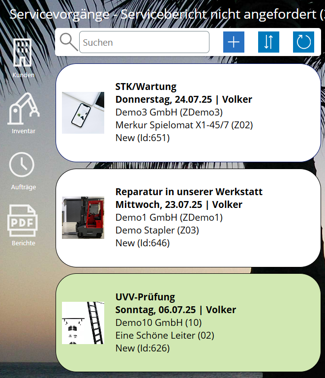
Welche Vorgänge werden gelistet?
Erfolgt der Aufruf über das Chart "Servicebericht nicht angefordert" werden die Vorgänge gelistet, für die noch kein Servicebericht angefordert wurde.
Erfolgt der Aufruf über das Chart "Rechnung nicht angefordert" werden die genehmigten Vorgänge gelistet, für die keine Rechnung angefordert wurde.
Erfolgt der Aufruf über ein Kundeninventar, werden die Vorgänge des gewählten Inventars gelistet.
Kann die Liste gefiltert werden?
Die Liste kann gefiltert werden, indem ein Suchbegriff in das Suchfeld eingeben wird. Es werden dann die Einträge gelistet, bei denen der Suchbegriff gefunden wird. Überprüft werden dazu: Techniker, Vorgangsdatum, Kundenname, Kundenort, Kundennummer, Hersteller, Inventarbezeichnung (Geräteart), Inventarnummer, DocumentStatus.
Hinzufügen: Mit einem Klick auf dieses Icon, kann ein Vorgang hinzugefügt werden. Das Icon ist nur für Benutzer sichtbar, die zu der App-Benutzergruppe "Techniker" gehören.
Sortierung: Sortiert wird die Liste nach Servicedatum auf-/absteigend und Kundenname aufsteigend. Mit einem Klick auf dieses Icon, wechselt die Sortierung der Liste von aufsteigend zu absteigend und umgekehrt.
Refresh: Mit einem Klick auf dieses Icon werden die Daten neu eingelesen.
Mit einem Klick auf einen Eintrag wird der Vorgang in der Detailansicht angezeigt.
Vorgangsdaten zeigt die App pssService Board auf dem Screen "Servicevorgänge" an.
Container: Vorgangsdaten
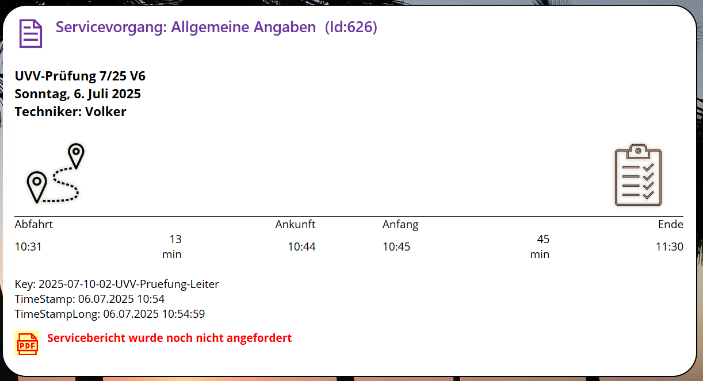
Löschen: Mit einem Klick auf dieses Icon kann der Vorgang gelöscht werden. Das Icon ist nur für Benutzer sichtbar, die zur App-Benutzergruppe "Techniker" gehören. Das Icon ist nicht sichtbar, wenn bereits ein Bericht angefordert und genehmigt wurde.
Kundendaten zeigt die App pssService Board auf dem Screen "Servicevorgänge" in dem Container "Auftraggeber" an.
Container: Auftraggeber
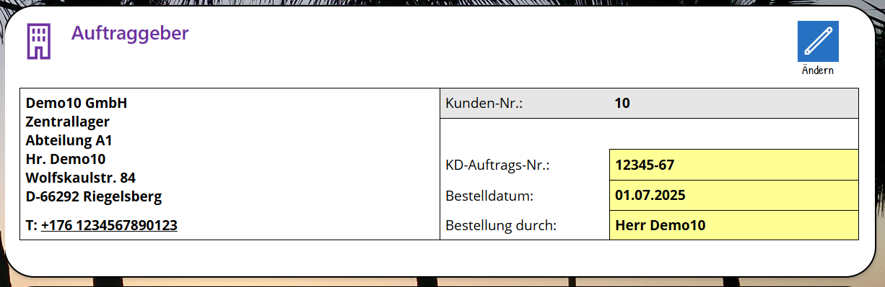
Ändern: Mit einem Klick auf dieses Icon kann der Bearbeitungsmodus aufgerufen werden. Das Icon ist nur für Benutzer sichtbar, die zur App-Benutzergruppe "Techniker" gehören. Das Icon ist nicht sichtbar, wenn bereits ein Bericht angefordert und genehmigt wurde.
Im Bearbeitungsmodus können Techniker die Kundenauftragsdaten (Kundenauftragsnummer, Bestelldatum, Bestellung durch) ändern.
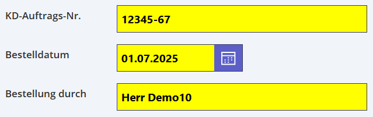
Inventardaten zeigt die App pssService Board auf dem Screen "Servicevorgänge" in dem Container "Kundeninventar" an.
Container: Kundeninventar
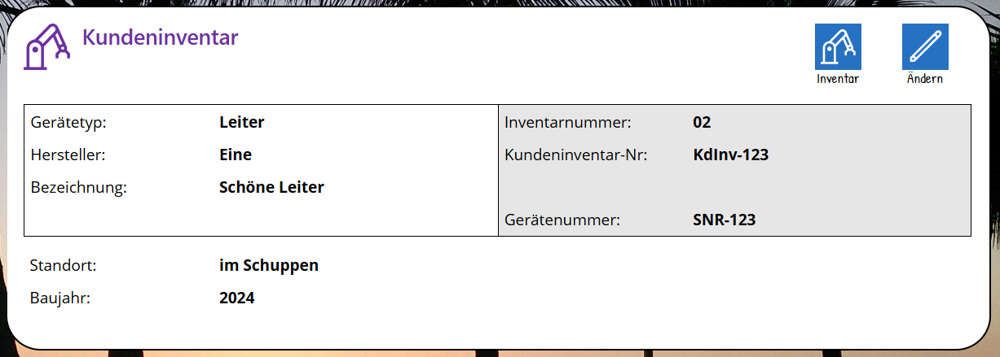
Inventar: Ein Klick auf dieses Icon öffnet den Screen "Kundeninventar". Die Inventarübersicht mit der Detailanzeige wird eingeblendet. Gelistet werden alle Geräte des Kunden, angezeigt das gewählte Inventar.
Verträge: Ein Klick auf dieses Icon öffnet den Screen "Serviceverträge". Die Vertragsübersicht mit der Detailanzeige wird eingeblendet. Gelistet werden alle Verträge des Kunden zu dem Inventar.
Ändern: Mit einem Klick auf dieses Icon kann der Bearbeitungsmodus aufgerufen werden. Das Icon ist nur für Benutzer sichtbar, die zur App-Benutzergruppe "Techniker" gehören. Das Icon ist nicht sichtbar, wenn bereits ein Bericht angefordert und genehmigt wurde.
Im Bearbeitungsmodus können Techniker die Inventardaten ändern. Welche Daten zu einem Kundeninventar erfasst werden können, hat Ihr Admin bei der Installation der Lösung pro Gerätetyp festgelegt.
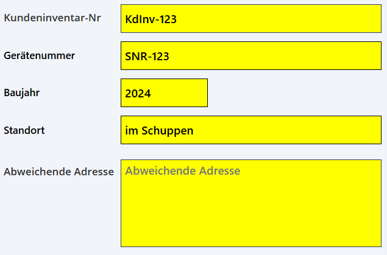
Eine Checkliste ist Hauptbestandteil der Servicevorgänge. Die Checkliste ist abhängig vom Gerätetyp und kann bis zu 25 Checkpunkte umfassen. Welche Checkpunkte gelistet werden, hat Ihr Admin bei der Installation festgelegt.
Container: Checkliste
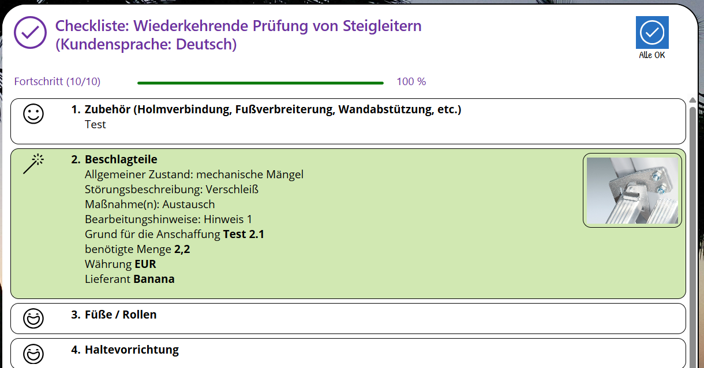
Alle OK: Mit einem Klick auf dieses Icon werden alle Einträge, für die noch kein Status erfasst wurde, auf den Default-Statuswert gesetzt (= erster Eintrag der Statusauswahl). Welche Statuswerte pro Checkpunkt verfügbar sind, hat Ihr Admin bei der Installation festgelegt. Tipp: Alle OK wählen, danach die Einträge bearbeiten, die nicht Ok waren und die Ergebnisse anpassen.
Checkpunkt bearbeiten: Solange kein Bericht angefordert und genehmigt wurde, können Techniker mit einem Klick auf einen Checkpunkt in den Bearbeitungsmodus wechseln und die Daten ändern.
Status festlegen. Welcher Status zu einem Checkpunkt erfasst werden kann, hat Ihr Admin bei der Installation der Lösung festgelegt.
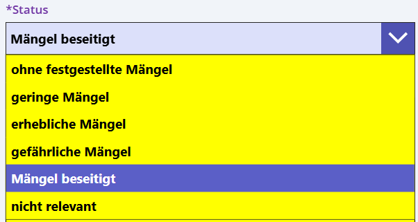
Bemerkungen erfassen. Ob Bemerkungen erfasst werden müssen, ist vom Status abhängig. Wenn Bemerkungen erfasst werden, bitte auf die Kundensprache achten! Der Kunde soll die Bemerkungen ja auch lesen und verstehen.
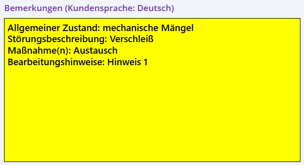
Die Bemerkungen können aus Textbausteinen übernommen werden. Verfügbar sind Textbausteine für die Kategorieren: "Allgemeiner Zustand", Störungsbeschreibung", "Maßnahmen" und "Bearbeitungshinweise". Ihr Admin hat die Textbausteine bei der Installation der Lösung festgelegt.
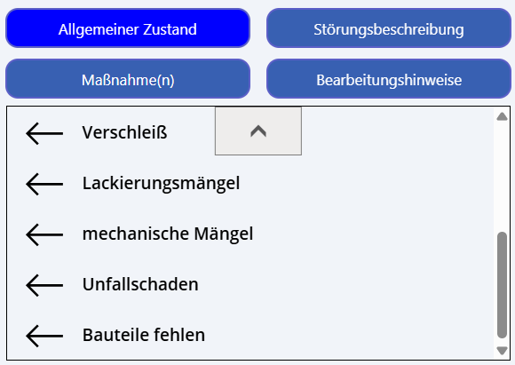
Eventuell ein Bild hochladen.
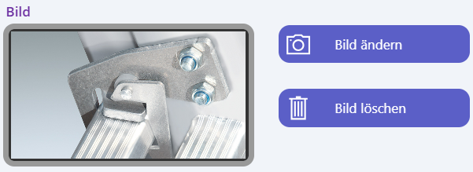
Wenn von Ihrem Admin Zusatzfelder zu einem Checkpunkt konfiguriert wurden, dann müssen Ihre Techniker die Information auch erfassen (Pflichtfelder). Bis zu 5 Felder vom Typ Texteingabe, Nummerneingabe, Optionsfeld und Dropdown können pro Checkpunkt konfiguriert werden. Sie können auch die Werte aus dem letzten Vorgang übernehmen.
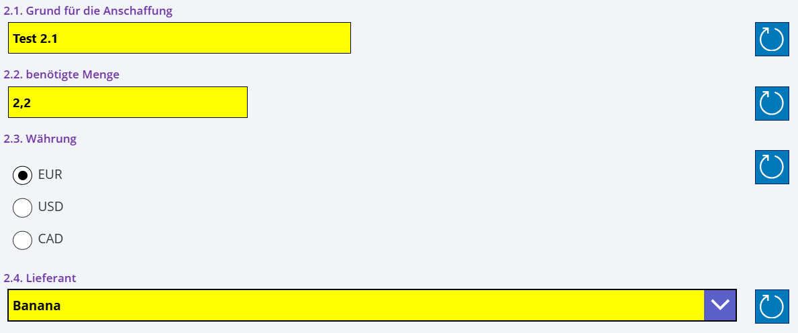
Zum Schluss "Daten speichern" wählen. Die erfassten Daten werden in der Checkliste angezeigt.
Ersatzteile, Zubehör und Einmalartikel zeigt die App pssService Board auf dem Screen "Servicevorgänge" in dem Container "Ersatzteile, Zubehör und Einmalartikel" an.
Container: Ersatzteile, Zubehör und Einmalartikel
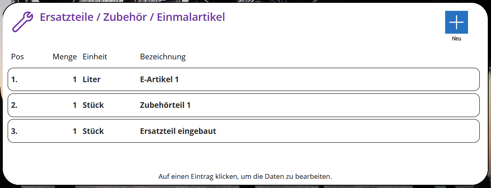
Neu: Mit diesem Icon kann ein Eintrag zu der Liste hinzugefügt werden. Der Screen "Neues Ersatzteil / Zubehör / Einmalartiklel" wird eingeblendet.
Eintrag bearbeiten: Solange kein Bericht angefordert und genehmigt wurde, können Techniker mit einem Klick auf einen Eintrag in den Bearbeitungsmodus wechseln und die Daten ändern.
Details zur Anreise zeigt die App pssService Board auf dem Screen "Servicevorgänge" in dem Container "Fahrtbericht" an.
Container: Fahrtbericht
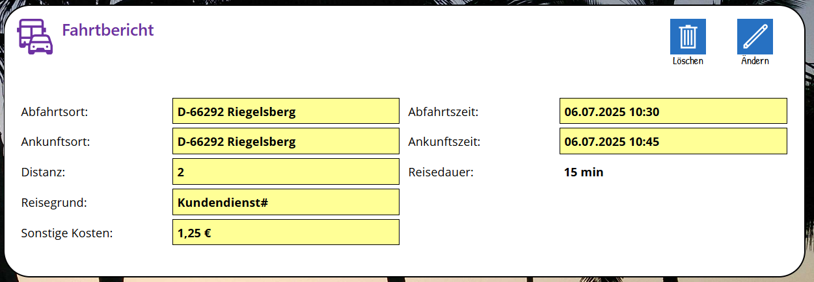
Löschen: Mit einem Klick auf dieses Icon kann der Fahrtbericht gelöscht werden.
Ändern: Mit einem Klick auf dieses Icon kann der Bearbeitungsmodus aufgerufen werden. Das Icon ist nur für Benutzer sichtbar, die zur App-Benutzergruppe "Techniker" gehören. Der Fahrtbericht kann auch dann angepasst werden, wenn ein Bericht angefordert und genehmigt wurde.
Im Bearbeitungsmodus können Techniker die Anreisedaten anpassen.
Die Arbeitszeit zeigt die App pssService Board auf dem Screen "Servicevorgänge" in dem Container "Dauer des Servicevorgangs" an.
Container: Dauer des Servicevorgangs
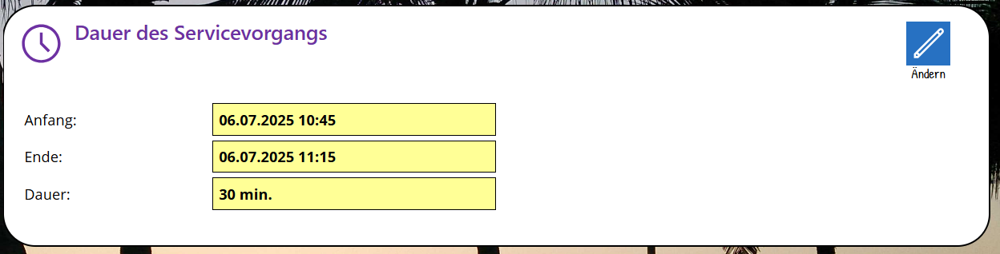
Ändern: Mit einem Klick auf dieses Icon kann der Bearbeitungsmodus aufgerufen werden. Das Icon ist nur für Benutzer sichtbar, die zur App-Benutzergruppe "Techniker" gehören.
Im Bearbeitungsmodus können Techniker die Arbeitszeit anpassen.
Die abschliessende Bewertung zeigt den Gesamtstatus (Status, Mängelklasse, Plakette) aus den Eingaben in der Checkliste. Diese zeigt die App pssService Board auf dem Screen "Servicevorgänge" in dem Container "Abschliessende Bewertung" an.
Container: Abschliessende Bewertung
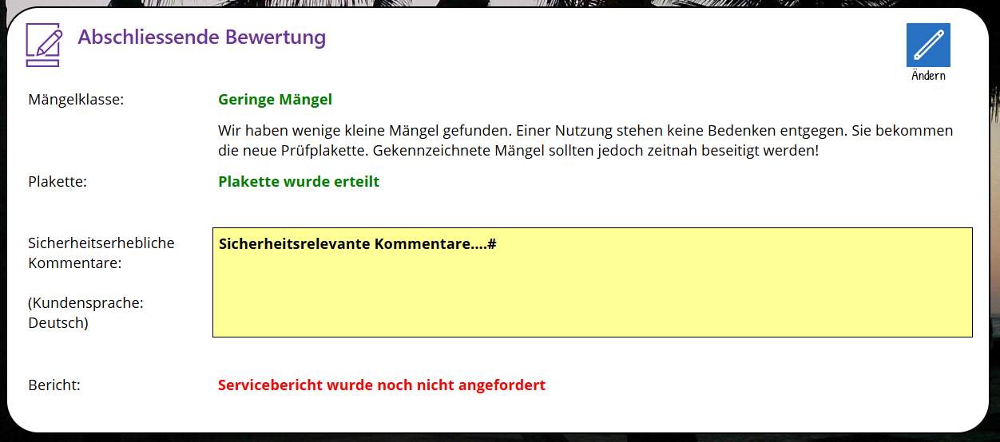
Ändern: Mit einem Klick auf dieses Icon kann der Bearbeitungsmodus aufgerufen werden. Das Icon ist nur für Benutzer sichtbar, die zur App-Benutzergruppe "Techniker" gehören.
Im Bearbeitungsmodus können Techniker sicherheitsrelevante Kommentare erfassen und den Servicebericht anfordern.
Die Leistungsabrechnung zeigt die App pssService Board auf dem Screen "Servicevorgänge" in dem Container "Leistungsabrechnung" an. Dieser Container wird erst eingeblendet, wenn der Servicebericht angefordert und genehmigt wurde.
Container: Leistungsabrechnung
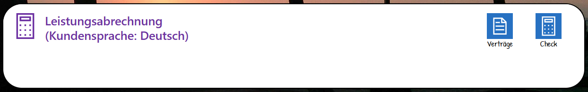
Verträge: Ein Klick auf dieses Icon öffnet den Screen "Serviceverträge". Die Vertragsübersicht mit der Detailanzeige wird eingeblendet. Gelistet werden alle Verträge des ausgewählten Kunden/Inventar.
Check: Ein Klick auf dieses Icon erstellt die Einträge für die Abrechnung. Gespeichert werden die Abrechnungsdaten in der SP-Liste "Leistungsabrechnung".
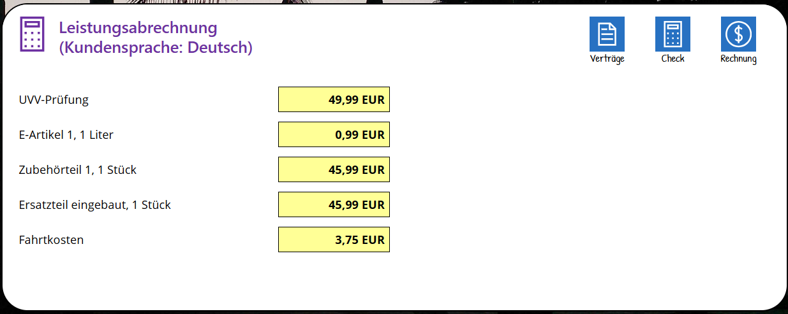
Rechnung: Mit einem Klick auf dieses Icon wird die Erstellung einer Rechnnung angefordert.
Auf dem Startbildschirm der App pssService Board die Servicekunden aufrufen. Die Servicekundenübersicht mit der Detailanzeige wird eingeblendet.
In der Übersicht den Kunden suchen und auswählen. Ist der Kunde nicht vorhanden, muss der Kunde in der App durch einen App-Admin erfasst werden.
Inventar aufrufen. Die Inventarübersicht mit der Detailanzeige wird eingeblendet.
In der Übersicht das Inventar auswählen. Ist das Inventar nicht vorhanden, muss es in der App durch einen App-Admin erfasst werden.
Servicevorgänge aufrufen. Der Screen "Servicvevorgänge" mit der Vorgangsübersicht und der Detailanzeige wird eingeblendet. Gelistet werden die bereits erfassten Servicevorgänge des gewählten Inventar.
Neuer Servicevorgang: Mit diesem Icon wird die Erfassung eines Servicevorgangs
gestartet. Der Dialog "Neuer Servicevorgang" wird eingeblendet. Das Icon ist nur für Benutzer sichtbar, die zur App-Benutzergruppe "Techniker" gehören.
In der Übersicht auf das Icon "Neuer Servicevorgang" klicken.
Screen: Neuer Servicevorgang
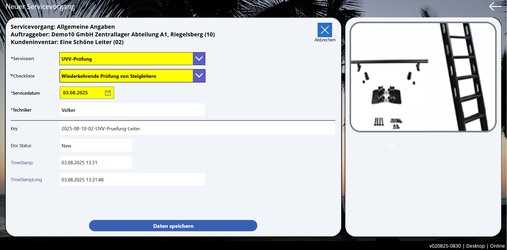
Serviceart: ist vorbelegt, kann aber geändert werden, wenn dem Gerätetyp weitere Servicearten zugeordnet wurden. Welche Servicearten verfügbar sind, hat Ihr Admin bei der Installation der Lösung festgelegt.
Checkliste: ist vorbelegt, kann aber geändert werden, wenn dem Gerätetyp und der gewählten Serviceart weitere Checklisten zugeordnet wurden. Welche Checklisten verfügbar sind, hat Ihr Admin bei der Installation der Lösung festgelegt.
Servicedatum: ist vorbelegt, kann aber geändert werden.
Techniker: ist vorbelegt, Änderungen sind nicht möglich.
Zum Schluss "Daten speichern" wählen. Der neue Vorgang wird im Screen "Servicevorgänge" angezeigt. Die Erfassung des Servicevorgangs kann jetzt fortgesetzt oder vorübergehend unterbrochen und später wieder fortgesetzt werden.
Der StartScreen der App pssService Board zeigt im Bereich "Servicevorgänge" in einem Chart die Anzahl der Vorgänge pro Monat, für die kein Servicebericht angefordert wurde.
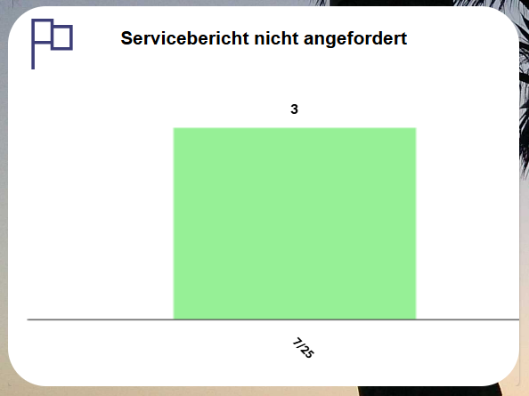
Ein Klick auf das Chart öffnet den Screen "Servicevorgänge". Die Vorgangsübersicht mit der Detailanzeige wird eingeblendet. Gelistet werden alle offenen Vorgänge. Jeder Techniker kann diese weiter bearbeiten. Das hilft bei der Stellvertretung.
Der StartScreen der App pssService Board zeigt im Bereich "Servicevorgänge" in einem Chart die Anzahl der genehmigten Vorgänge, für die noch keine Rechnung angefordert wurde. Genehmigt bedeutet, dass der Servicebericht angefordert und genehmigt wurde. Das Chart wird nur angezeigt, wenn Ihr Admin das Faktura Add-On in den Einstellungen der Lösung aktiviert hat.
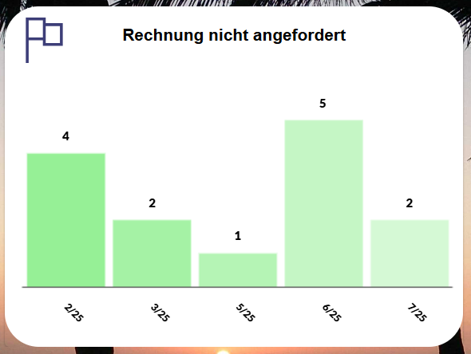
Ein Klick auf das Chart öffnet den Screen "Servicevorgänge". Die Vorgangsübersicht mit der Detailanzeige wird eingeblendet. Gelistet werden die genehmigten Vorgänge, für die noch keine Rechnung angefordert wurde.